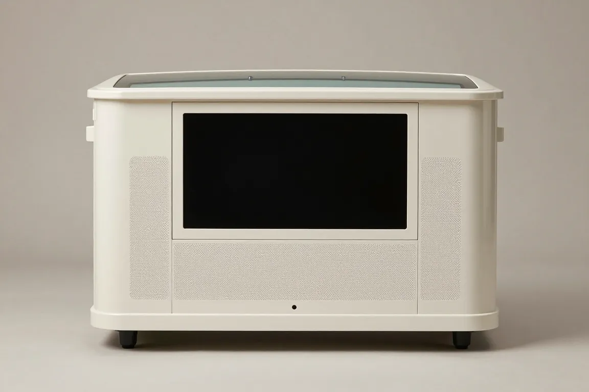

Тихий электромобиль. Гладкий закрытый кузов без решётки, утопленные ручки и стеклянная крыша. Салон пустой, из переработанной ткани, с одним большим экраном вместо приборов.

Главная идея
В электромобиле нет двигателя, который нужно показывать. Это гладкая тихая оболочка с пустым салоном, а все органы управления собраны на экране.
Принципы дизайна
Закройте решётку и обозначьте «лицо» тонкой линией фар или гладкой панелью.
Делайте поверхность гладкой, с коэффициентом лобового сопротивления ниже 0,28, и ставьте утопленные дверные ручки.
Задайте низкую широкую стойку с большими колёсами 19–21 дюйм, вынесенными к углам.
Берите стеклянную крышу над всем салоном, чтобы салон был полон света.
Держите салон пустым: один большой экран, никаких физических приборов и несколько чистых поверхностей.
Обтягивайте сиденья переработанным трикотажем, войлоком или материалом без кожи в двух-трёх спокойных цветах.
Ставьте тонкие фары одной линией спереди и сзади и простой значок.
Антипаттерны
Большая хромированная решётка
Фальшивое дерево и глянцевый чёрный пластик
Панель из множества физических переключателей
Имитация звука двигателя и фальшивые воздухозаборники